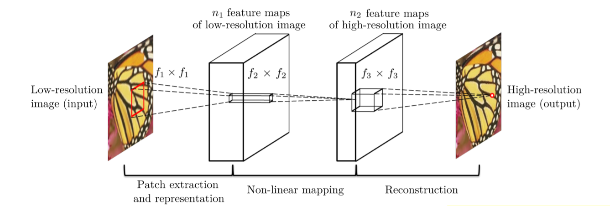
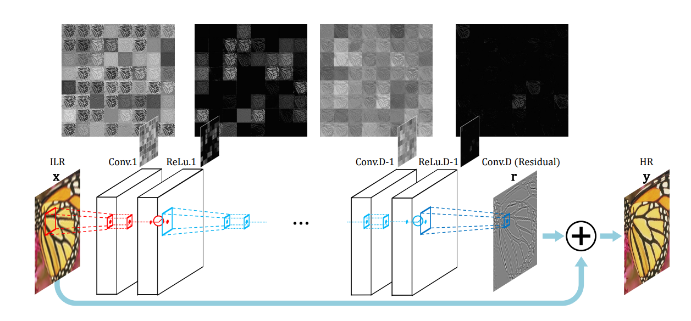
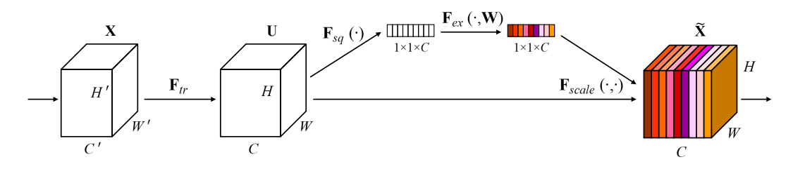

Evolution
1. AlexNet
2015: Image super-resolution using deep convolutional networks (SRCNN)

- End-to-end mapping between the low/high-resolution images
- Jointly optimizes all layers
- Bicubic interpolation before input?
| Implementation | Framework | Understandable |
|---|---|---|
| SRCNN-pytorch | Pytorch | ✅ |
2. VGGNet
Very Deep Convolutional Networks for Large-Scale Image Recognition.

Architecture of VGG Net
VGGNet uses smaller kernel and deeper layers.
2016: Accelerating the super-resolution convolutional neural network (FSRCNN)

Conv(f, n, c): conv size, conv number, conv channel
- Better performance but lower computational cost than SRCNN
- Original image as input
- Non-linear mapping is replaced by shrinking, mapping and expending
- Smaller fillter size and deeper network structure
Pytorch Impl Easy to understand.
3. ResNet
A Residual Neural Network (a.k.a. Residual Network, ResNet) is a deep learning model in which the weight layers learn residual functions with reference to the layer inputs. A Residual Network is a network with skip connections that perform identity mappings, merged with the layer outputs by addition.

Residual Block
# https://zhuanlan.zhihu.com/p/463935188 import torch from torch import nn from torch.nn import functional as F class Residual(nn.Module): def __init__(self, input_channels, num_channels, use_conv=False, strides=1): super().__init__() self.conv1 = nn.Conv2d(input_channels, num_channels, kernel_size=3, padding=1, stride=strides) self.conv2 = nn.Conv2d(num_channels, num_channels, kernel_size=3, padding=1) if use_conv: self.conv3 = nn.Conv2d(input_channels, num_channels, kernel_size=3, padding=1) else: self.conv3 = None self.bn1 = nn.BatchNorm2d(num_channels) self.bn2 = nn.BatchNorm2d(num_channels) def forward(self, X): Y = F.relu(self.bn1(self.conv1(X))) Y = self.bn2(self.conv2(Y)) if self.conv3: X = self.conv3(X) Y += X return F.relu(Y)
2016 Accurate Image Super-Resolution Using Very Deep Convolutional Networks (VDSR)
- Accurate, single-image SR
- Increasing network depth imporves accuray
- Simpe, effective traning procedure

Cascade a pair of layers (convolutional and nonlinear) repeatedly.
2017: Photo-Realistic Single Image Super-Resolution Using a Generative Adversarial Network (SRResNet)

Architecture of Generator and Discriminator Network with corresponding kernel size (k), number of feature maps (n) and stride (s) indicated for each convolutional layer.
| Implementation | Framework | Understandable |
|---|---|---|
| pytorch-SRResNet | Pytorch | ✅ |
| ESRGAN | Pytorch | ✅ |
2016: Deeply-Recursive Convolutional Network for Image Super-Resolution (DRCN)
- A very-deep recursive conv network
- Increasing recursion depth can improve performance without introducing new params

Three parts: embedding network, inference network and reconstruction network.

(a): Final (advanced) model with recursive-supervision and skip-connection. The reconstruction network is shared for recursive predictions. All predictions are used from the intermediate recursion to obtain the final output. (b): Applying deep-supervision to basic model. Unlike in (a), the model in (b) uses different reconstruction networks for recursions and more parameters are used. (c): An example of expanded structure of (a) without parameter sharing (no recursion). The number of weight parameters is proportional to the depth squared.
| Implementation | Framework | Understandable |
|---|---|---|
| super_resolutiondeeply-recursive-cnn-tf | TensorFlow | ❎ |
Image Super-Resolution via Deep Recursive Residual Network (DRRN)
4. DenseNet
What is DensNet?
Image Super-Resolution Using Dense Skip Connections (SRDenseNet)
Residual Dense Network for Image Super-Resolution (RDN)
5. SENet (Channel Attention), Non-Local Attention
Squeeze-and-Excitation Network (Channel Attention)
In this work, we focus instead on the channel
relationship and propose a novel architectural unit, which we term the “Squeeze-and-Excitation” (SE) block, that adaptively recalibrates channel-wise feature responses by explicitly modelling interdependencies between channels.

Squeeze-and-Excitation block.
Input: .
Step 1: Transformation
is a conv operator maps to feature map . Each of the learned filters operates with a local receptive field and consequently each unit of the transformation output is unable to exploit contextual information outside of this region.
Step 2: Squeeze
To mitigate this problem, squeeze global spatial information into a channel descriptor. This is
achieved by using global average pooling to generate
channel-wise statistics.
A.k.a, one channel, one statistic.
Step 3: Excitation
is a FC layer, map to .
And finally:
class SELayer(nn.Module): def __init__(self, channel, reduction=16): super(SELayer, self).__init__() self.avg_pool = nn.AdaptiveAvgPool2d(1) self.fc = nn.Sequential( nn.Linear(channel, channel // reduction, bias=False), nn.ReLU(inplace=True), nn.Linear(channel // reduction, channel, bias=False), nn.Sigmoid() ) def forward(self, x): # {x} should be feature map, not image. b, c, _, _ = x.size() y = self.avg_pool(x).view(b, c) # Squeeze y = self.fc(y).view(b, c, 1, 1) return x * y.expand_as(x)
(2018) Image Super-Resolution Using Very Deep Residual Channel Attention Networks (RCAN)
- A residual in residual (RIR) structure to form very deep network
- Abundant low-frequency information to be bypassed through multiple skip connections
- A channel attention mechanism to adaptively rescale channel-wise features

Archetecture of RCAN

Channel attention (CA)

Residual channel attention block (RCAB)
| Implementation | Framework | Understandable |
|---|---|---|
| RCAN | Pytorch | ✅ |
Not dramatically improved compared to RDN.
CVPR 2019: Second-order Attention Network for Single Image Super-Resolution (SAN)
- A novel trainable second-order channel attention (SOCA) model rescales the channel-wise features by using second-order feature stastics
- None-locally enhanced residual attention group

Framework of the proposed second-order attention network (SAN) and its sub-modules.
Non-locally Enhanced Residual Group (NLRG) consists of several region-levelnon-local (RL-NL) modules and one share-source residual group (SSRG) structure.
The RL-NL exploits the abundant structure cues in LR features and the self-similarities in HR nature scenes.
The SSRG is composed of G local-source residual attention groups (LSRAG) with share-source skip connections (SSC).
Each LSRAG further contains M simplified residual blocks with local-source skip connection, followed by a second-order channel attention (SOCA) module to exploit feature interdependencie

Size of input is the same as output.
- is a conv kernel
- Gaussian:
- Embedded Gaussian:
- Dot Product:
- Concatenation:
In order to embed non-local to a network, non-local should be designed as a residual block:

Optimization, oc is output channels.
Self-attention is based on NL.
Region-level non-local module (RL-NL)
Traditional global level non-local operations may be limited for some reasons:
- Global-level non-local operations require unacceptable computational burden, especially when the size of feature is large
- It is empirically shown that non-local operations
at a proper neighborhood size are preferable for low-level
tasks (e.g., image super-resolution)Thus for feature with higher spatial resolution or degradation, it is natural to perform region-level non-local operations.
Local-source residual attention group (LSRAG)
Due to our share-source skip connections, the abundant low frequency information can be bypassed. To go a further step to residual learning, we stack M simplified residual blocks to form a basic LSRAG.
Second-order Channel Attention (SOCA)
SENet only exploits first-order statistics of features by global average pooling, while ignoring statistics higher than first-order, thus hindering the discriminative ability of the network.
Propose a second-order channel attention (SOCA) module to learn feature interdependencies by considiering second-order statistics of features.
- Covariance Normalization
- Channel Attention
- Acceleration
2020: Single Image Super-Resolution via a Holistic Attention Network (HAN)
Image Super-Resolution with Cross-Scale Non-Local Attention and Exhaustive Self-Exemplars Mining (CSNLN)
Context Reasoning Attention Network for Image Super-Resolution (CRAN)
由于注意力机制相对简单, 比较容易采用, 因此这一阶段的论文非常多. 也是从这一阶段开始, 超分辨率模型的提升开始变小, 一方面是因为基数较高, 另一方面也是因为注意力机制在超分辨率模型中的收益本就并不高. 以最先采用了通道注意力机制的RCAN为例, 其网络结构如下图所示：

该论文中通道注意力机制Channel Attention(CA)也是一个主要创新点, 但从消融实验结果来看, Channel Attention的效果非常一般, 单独使用提升了0.07, 配合两种残差结构LSC, SSC一起使用仅提升了0.03, 效果明显小于两种残差连接 (LSC和SSC), 还得考虑Channel Attention增加的计算量.
个人认为, Channel Attention在超分辨率中效果一般的原因在于：超分网络每个子模块的通道数保持不变, 不会像分类网络/backbone那样随着网络的加深, 特征图分辨率变小, 通道数变多. 通道注意力机制需要在通道数较多时, 才能提取足够的信息来建立通道间的关系. 而RCAN的每个子模块通道数为64, 明显少于一般backbone的256, 512, 1024, 因此失效. 同理, 由于输入图片的分辨率较低, 空间注意力机制Spatial Attention的效果应该也不会太好, 理论上Spatial Attention不太适用于RCAN这类后端上采样的超分网络. 从下表更能看出, 各种注意力机制的堆叠 (RCAN/SAN/HAN)相比于只采用密集连接+残差的RDN提升并不明显.

6. ViT (Transformer)
- Pre-Trained Image Processing Transformer (IPT, CVPR 202)1
IPT采用了原版的Transformer, 模型的参数量很大 (116M), 因此模型训练的难度会比较大, 作者利用ImageNet作为基线数据集来预训练模型.
这篇论文第一个提出将Transformer应用于底层视觉任务, 且不止做图像超分辨率一个任务, 而是同时做去噪, 去雨, 超分三个任务. 通过构建一个基于Transformer的预训练模型, 利用上它强大的表征能力, 以Transformer为核心, 配上不同的Head和Tails, 以完成相对应的底层视觉任务. 在超分任务中, IPT的效果比起各种注意力机制也要明显一些.
7. Transformer 魔改
在这一阶段, 分类模型的优化基本演变为了Transformer的魔改, 主要改进方向有两个： (1)对Transformer本身的优化, 包括模型结构优化, 轻量化等; (2)CNN和Transformer的结合, 以Swin Transformer为典型代表. 这些Transformer的魔改同样被搬到了底层视觉任务.
- SwinIR: Image Restoration Using Swin Transformer (SwinIR, ICCV 202)1
- Image super-resolution with non-local sparse attention (NLSA, CVPR 202)1
- Efficient Non-Local Contrastive Attention for Image Super-Resolution (ENLCA, AAAI 202)2
- Rich CNN-Transformer Feature Aggregation Networks for Super-Resolution (AC)T
这些模型的创新不是很足, 有些甚至可以说是Transformer变体在底层视觉任务中的应用, 如SwinIR套用了Swin Transformer, NLSA套用了ReFormer. 但像SwinIR等基本都会做多个底层视觉任务, 工作量都很大.
在这一阶段的魔改中, Swin Transformer算是一个非常成功的改进, 创造性的提出了局部注意力计算模块LSA, 即仅仅在窗口内计算自注意力, 相比ViT性能也有极大的提升, 将Transformer 实用性提升了一大步. 而更多的论文则是对Transformer引入CNN的局部信息来提升性能和收敛速度, 虽然多少有些效果, 但这种混合CNN和Transformer的做法我觉得违背了设计初衷. 但是从目前来看, CNN和Transformer本身就没啥好特意区分的, 两者在某个角度上甚至是等价的.
8. Pre-training + Transformer
- On Efficient Transformer-Based Image Pre-training for Low-Level Vision (ED)T
- Activating More Pixels in Image Super-Resolution Transformer (HA)T
EDT论文中指出：预训练在不同low-level任务中起不同的作用. 比如, 在超分任务中, 预训练可以为更高层引入更多局部信息, 进而产生显著性能提升; 与此同时, 预训练几乎不会影响降噪网络的内部特征表达, 故而产生了轻微的性能提升. 更进一步, 通过探索了不同的预训练方法并证实：多任务预训练更有效且数据高效.
9. MLP
- MAXIM: Multi-Axis MLP for Image Processing (MAXIM, CVPR 202)2
MAXIM这篇论文实际上没有做图像超分辨率, 而是做了去噪, 去模糊, 去雨, 去雾, 增强五个任务. 超分任务一般用单尺度的架构, 而这篇文章采用了UNet作为基础算法, 具有多尺度结构, 所以没有做超分 (一样的情况还有Uformer: A General U-Shaped Transformer for Image Restoration, 也是采用了UNet结构, 做了其他底层视觉任务但没有做超分). 但实际上, 把MAXIM或者其他MLP变体的主要block搬到单尺度的超分拓扑中, 应该也是完全行得通的.
在2019年的综述Deep Learning for Image Super-resolution: A Survey中, 将图像超分辨率的结构分为以下四种：(a)前端上采样Pre-upsampling SR; (b)后端上采样Post-upsampling SR; (c)渐进式上采样Progressive upsampling SR; (d)升降采样迭代Iterative up-and-down Sampling SR.

在发展过程中, 后端上采样的结构具有引入噪声少, 速度快的优点, 逐渐成为主流. 目前, 图像超分辨率这一领域已趋于成熟, 不再区分上述四种形式, 基本已经统一为先修复, 再放大的结构, 即后端上采样. 模型基本都遵循相同的定式：浅层特征提取 (head)+深层特征提取 (body)+重建模块 (tail). 随着分类模型的推进, 图像超分辨率的改进目前大多都是在以上定式之下, 改进网络的body (CNN/Transformer/MLP).